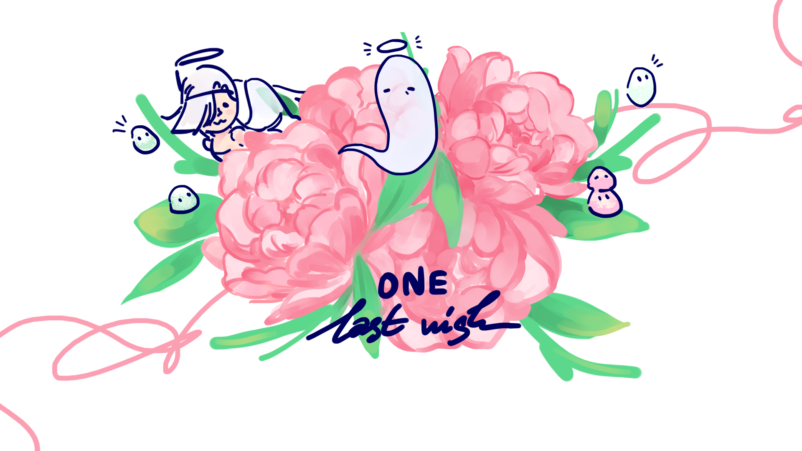
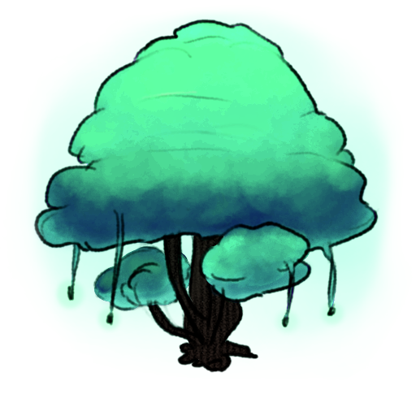
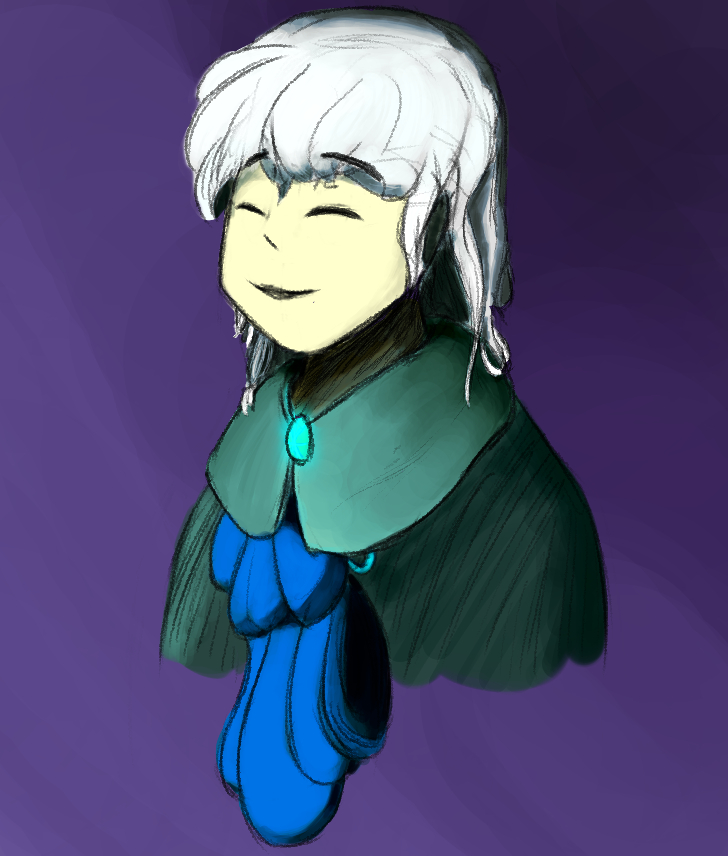
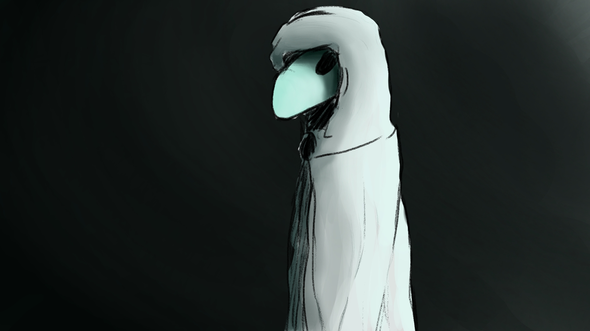
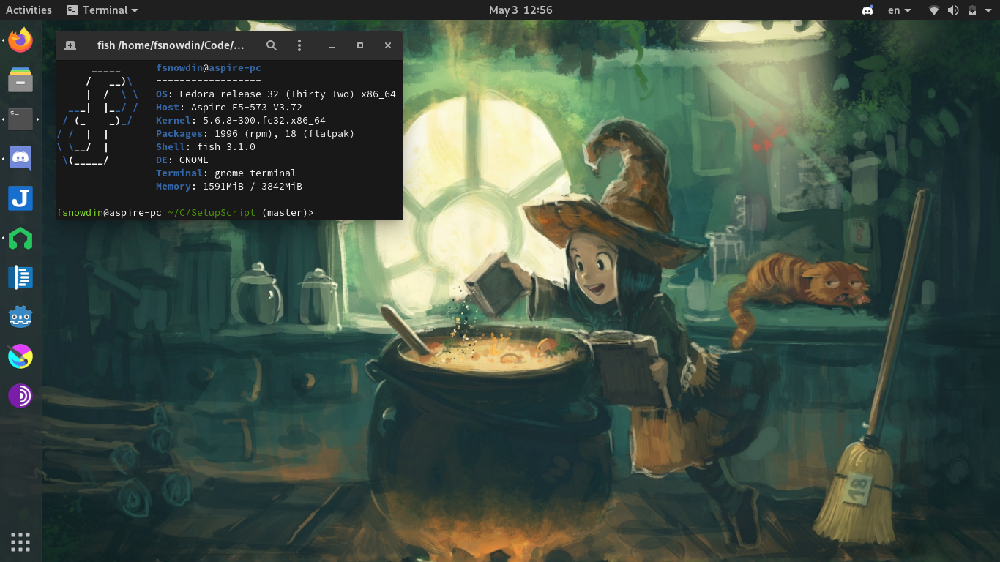
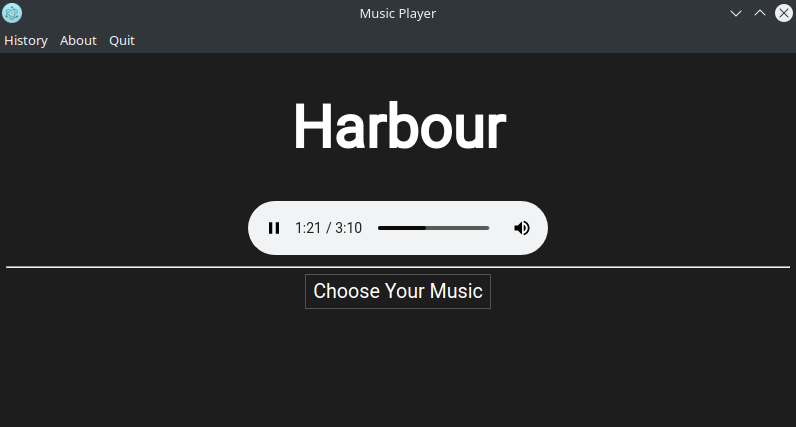
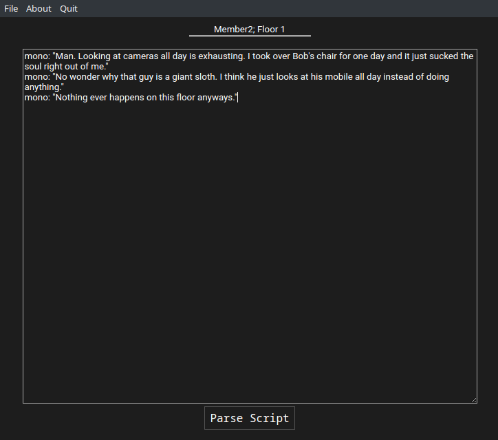
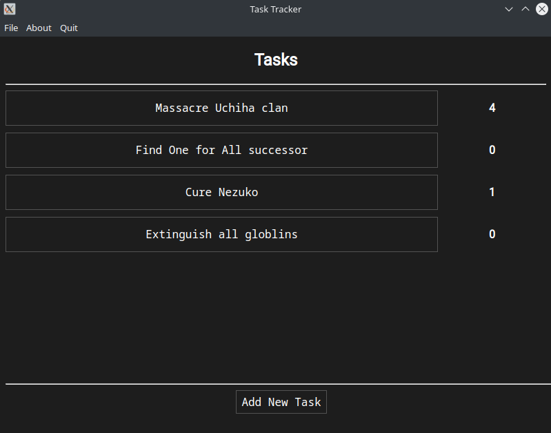
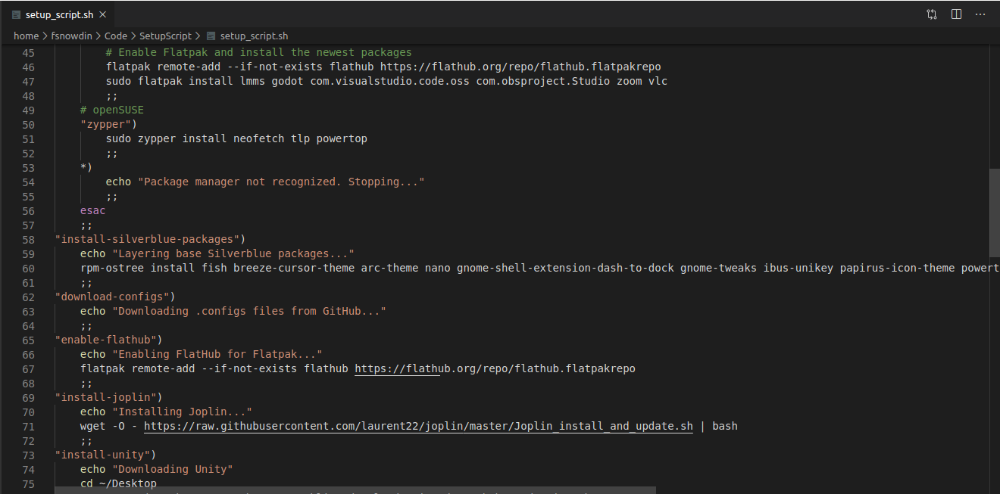

Game Dev
Making adventure games with an emphasis on worldbuilding and exploration. Most of my games are open-source and made with the Godot Engine, check them out.
A World of Order
A short top-down adventure game taking inspirations from many real-life cults and imagines what life would look like when a cult is at the helm of government.

Seeker
At the edge of the universe, the Seeker completes their mission. No matter the cost.

One Last Wish
One last gift for his beloved daughter before he leaves this world.
And a few more games...
Art
Still learning to be a good artist; everything is done in Krita. Philosophy: Colors matter more than linework.
  Music
Sometimes I make ambient, very repetitive music with LMMS/FL Studio on SoundCloud.
We
Snow World (Yume Nikki remix)
The Expanse
Linux Fan
Started with Lubuntu in early December 2019. Now it's impossible to live without Linux. Current setup:
Kubuntu 20.04
A mixture of everything working right out of the box, a gorgeous desktop, and a beautiful logo keeps me feeling right at home.

Fedora 32
The perfect GNOME setup. The choice when going out backed by Fedora's phenomenal power management, or when wanting to have a fancy computing experience with the clean Materia GNOME.
Programming
Creating somewhat helpful Electron apps on occasions. I can use Javascript, GDScript, Bash.
Music Player
A simple music player which helped me grasp the basics of Electron.
Ren'Dot
A Ren'Py-like parser to allow rapid scriptwriting for my games.
Tracker
A simple habit tracker.
Setup Script
Script to help set things up (installing preferred packages, updating GRUB, etc.) on a new Linux system.
